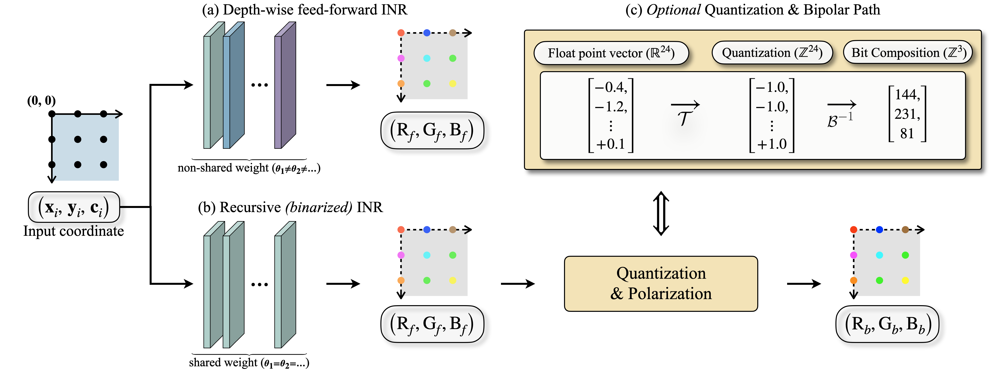

01
Sinusoidal recurrence grows
Support rises monotonically from 30.9% to 94.6%, matching the predicted integer-combination closure.
A shared sinusoidal block repeatedly refines its latent state, expanding effective spectral support without adding parameters.
1Department of Electrical Engineering, Korea University 2Graduate School of Artificial Intelligence, UNIST
†Corresponding author
Overview
Implicit neural representations often improve fidelity by increasing depth or multiresolution parameters, which raises model size and compute. We study a different approach: iterative latent refinement with a shared sinusoidal block under a fixed parameter budget.
We show that sinusoidal activations induce a harmonic line-spectrum, providing a spectral explanation for why recurrent unrolling enriches effective support without adding parameters. The resulting recurrent INR reaches substantially higher fidelity than feed-forward baselines with fewer parameters and optimization steps, and transfers favorably to super-resolution, NeRF, and SDF tasks. In the quantized setting, optional bipolar code-space supervision enables exact discrete reconstruction.
Coordinate-based INRs suffer from spectral bias: low-frequency structure is fitted readily, while fine high-frequency detail arrives slowly. Deeper networks, richer encodings, and multiresolution grids improve the result by spending parameters, memory, and optimization steps.
The key question is whether the latent transformation $\mathcal F$ can be refined enough under a fixed budget.
Can high-frequency reconstruction improve by repeatedly refining an internal latent state while reusing a compact set of parameters, rather than adding independently parameterized depth?
Recurrence supplies effective depth through weight reuse. The harmonic line-spectrum explains why this particular recurrence is productive rather than merely iterative.
Theory
Following SIREN, the sinusoidal lifting maps coordinates to learned frequencies and phases:
The bandwidth scalar $\omega_{\mathrm{in}}$ sets the overall frequency scale. Raising it consistently improves high-pass reconstruction at every training stage—for example, from 23.51 to 36.45 dB after only 200 iterations.
Passing a multi-tone code $u_j(\mathbf{x})=\beta_j+\sum_i\alpha_{j,i}\sin(\theta_i(\mathbf{x}))$ through another sine yields, by the Jacobi–Anger expansion,
The emitted lines lie at integer combinations $\boldsymbol{\Omega}'=\sum_i k_i\boldsymbol{\Omega}_i$: sums, differences, and higher-order harmonics rather than simple reweightings of existing frequencies.
Each shared application expands the reachable harmonic support. Recurrent unrolling therefore buys spectral richness under a fixed parameter count—the architectural counterpart of adding depth.
Evidence
The theory predicts that every shared sinusoidal step should broaden the reachable spectrum. We test this on the network’s hidden activations over a regular $H\times H$ coordinate grid.
For every recurrent index $\ell$, we compute the channel-averaged, peak-normalized 2D DFT magnitude:
Spectral support measures breadth; radial high-frequency content measures strength near Nyquist:
| Recurrence regime | Mechanism | Spectral support $S_\ell$ $(\ell=1\to8)$ | Radial HF$_\ell$ | Exact fit BER = 0? |
|---|---|---|---|---|
| Sinusoidal, weight-tied (Ours) | Integer-combination closure $\Omega^{(\ell+1)}\subseteq\operatorname{span}_{\mathbb Z}\Omega^{(\ell)}$ | 30.9% → 94.6% ↑ monotone | grows ↑ | ✓ (∞ dB) |
| Iterative SIREN iSIREN | Contractive equilibrium $z^\star=F_\theta(z^\star,\mathbf{x})$ | 33.5% → 33.5% → saturates | 0.008 → flat | ≤ 47.16 dB |
| Non-sinusoidal recurrence | No harmonic-generation mechanism | collapses ↓ | decreases ↓ | ✗ |
Hidden-activation spectra across recurrent or depth steps at random initialization. Endpoint values are shown; arrows summarize the trajectory over $\ell$.
01
Support rises monotonically from 30.9% to 94.6%, matching the predicted integer-combination closure.
02
A contractive equilibrium stops changing after roughly one iteration, capping fidelity below an exact fit.
03
Without sine there is no harmonic-generation mechanism, so repeated application shrinks support.
Method
We instantiate the latent transformation as one shared sinusoidal block. Coordinates initialize the state; a weight-tied map refines it for $R$ finite steps; a final linear layer reads out the signal:
The recurrent map is shared across all steps. There is no coordinate re-injection and no contractive fixed-point solve: this is explicit finite unrolling with backpropagation through time.

For lossless fitting, a quantized target $y_p\in\{0,\dots,2^B-1\}$ is mapped through a $B$-bit Gray encoder $\Gamma$ into a zero-centered bipolar codeword:
Zero-centered, constant-norm targets match the symmetric range of sine, while Gray coding keeps neighboring quantization levels one bit apart. This optional path enables exact discrete reconstruction; the underlying fidelity gains come from recurrence itself.
Scaling
At a fixed optimization step and a fixed 593.7K parameters, each extra application of the shared block improves reconstruction. Moving from a single feed-forward pass to $R=5$ yields a 23.7 dB gain.
| # Recurrent steps | Feed-forward | $R=2$ | $R=3$ | $R=4$ | $R=5$ |
|---|---|---|---|---|---|
| PSNR (dB) @ step 500 | 39.72 | 46.36 +6.6 | 54.77 +15.0 | 60.84 +21.1 | 63.38 +23.7 |
| # Parameters | 593.7K | 593.7K | 593.7K | 593.7K | 593.7K |
Reconstruction quality at optimization step 500. Deltas are relative to the feed-forward baseline; parameter count remains identical.
01
02
03
04
Citation
@InProceedings{10.1007/978-3-032-37574-2_22,
author={Hyunmin Cho and Jaejun Yoo and Kyong Hwan Jin},
title={Recurrent Sinusoidal INRs for Efficient High-Fidelity Representation},
booktitle={Computer Vision -- ECCV 2026},
year={2026},
publisher={Springer Nature Switzerland},
address={Cham},
pages={385--403},
isbn={978-3-032-37574-2}
}